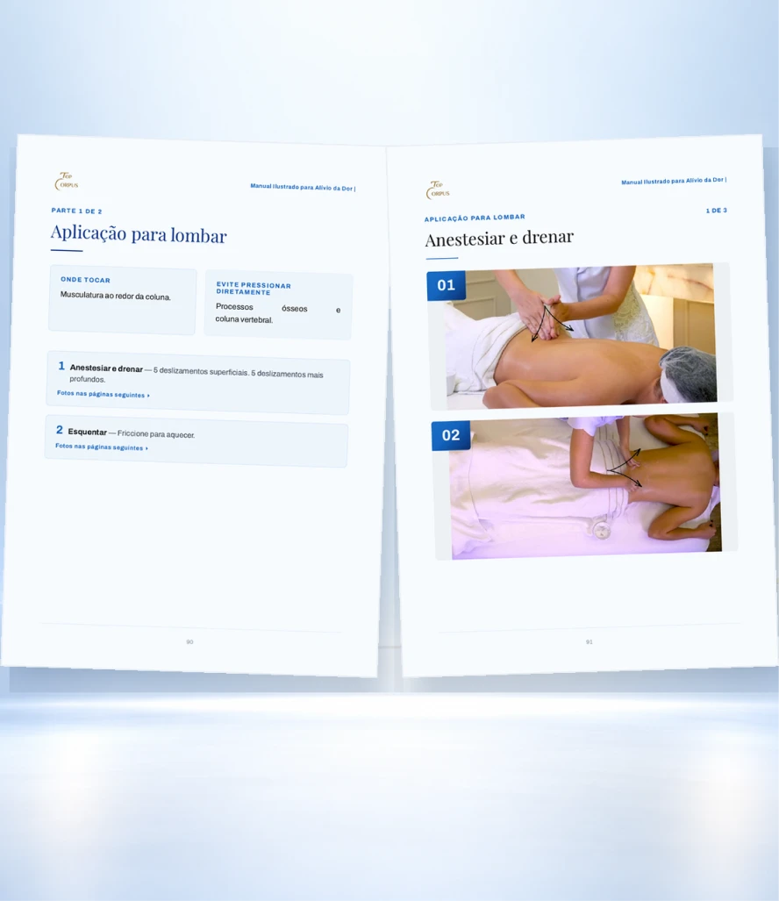

01
Mais de 70 manobras para tratar diferentes regiões do corpo
Cada página mostra a manobra sendo aplicada, igual na foto ao lado: a região certa, a mão no lugar certo, pronta para você reproduzir na sua cliente.